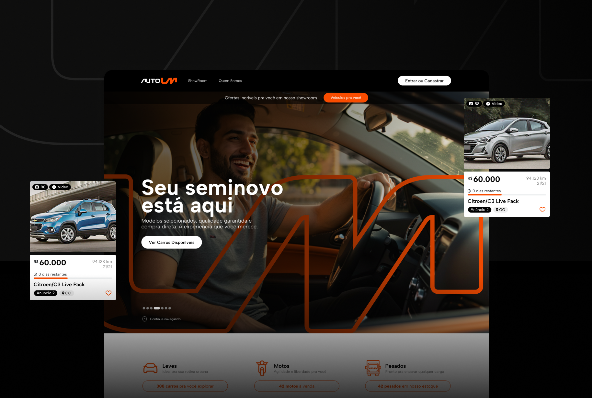
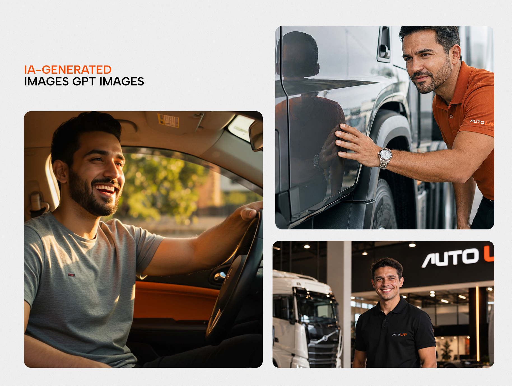
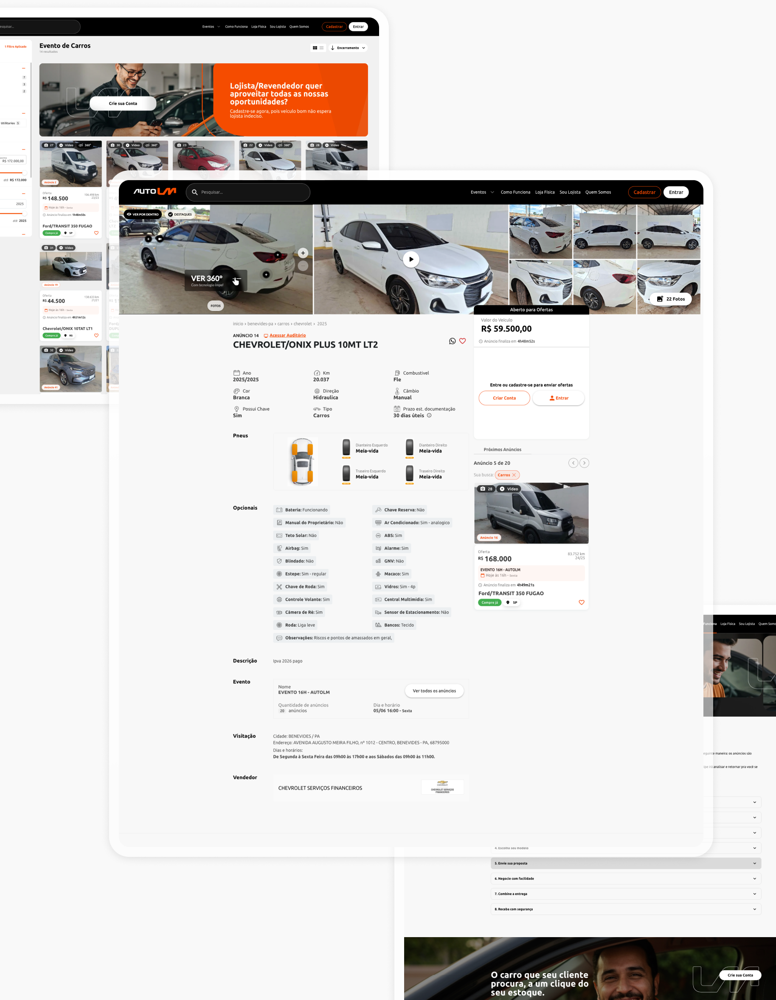
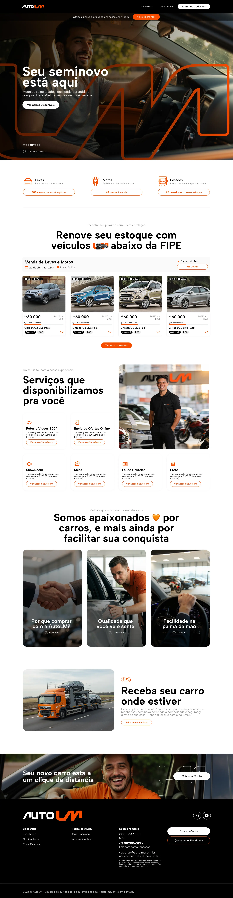
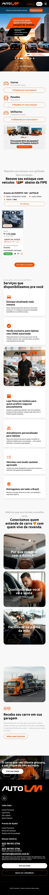

AutoLM
Home para um site de venda direta de veículos, pensada para garageiros apresentarem seu estoque com mais clareza, confiança e apelo visual.

Venda direta com mais confiança
A proposta busca ajudar garageiros a apresentar veículos de forma mais profissional, valorizando o estoque e facilitando o entendimento da oferta para quem chega ao site.
Pesquisa e direção visual
Pesquisa de referências do mercado automotivo e entendimento das necessidades da venda direta para garageiros, com foco em deixar a home mais objetiva, comercial e fácil de navegar.

Exploração assistida

Imagens geradas com IA
Geração e curadoria de imagens com IA para construir uma atmosfera mais profissional, testar narrativas
visuais e apoiar a apresentação dos veículos sem perder credibilidade.
A proposta segue uma estética premium, com predominância de tons de laranja, contraste alto, imagens com
iluminação sofisticada e elementos visuais que reforçam a qualidade dos veículos.
Foram criadas imagens com apoio de IA para representar diferentes momentos da compra.

Arquitetura da vitrineDetalhes do veículo
Refinamento das páginas internas conforme as necessidades do projeto, organizando páginas de veículo, listagens, com foco em mais detalhes para o veículo.

Uma home para vender melhor
O resultado combina visual marcante, imagens com apoio de IA e uma estrutura pensada para apresentar veículos de forma clara, ajudando garageiros a comunicar estoque, diferenciais e próximos passos.

